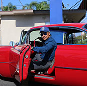

@大zx王翎芳
21
旅asd及作家，asdasd人。
进入微博>>
@坨坨mama
42
美食作家、新浪名博、职业撰稿人、摄影师，多家旅游网站特约旅游体验师，著有《美食达人秀：坨坨妈 小吃诱惑》、《我和宝宝的手作健康烘培》《宝宝最喜欢的健康甜点》。
进入微博>>
@我爱厨房韩伟
12
《美食圈》杂志主编，
《带好胃口去旅行》作者。
进入微博>>
@83小钟
23
美食旅行生活类作者，新浪美食名博，
著有《厨说新语》系列美食图书。
进入微博>>
@恐怖大王李西闽
46
著名作家。中国新概念恐怖小说的领军人物和倡导者。代表作《死亡之书》《狗岁月》《血钞票》《崩溃》等。
进入微博>>

@行者风雷
32
北大国际MBA,新华社、中新社摄影师,
美国新闻摄影协会会员, 中国摄影师
协会会员,美国国家地理协会会员,
《中国国家旅游》《DEEP中国科学探险》
等杂志摄影师,撰稿人。
进入微博>>
@朴骞Jason
21
美食旅行生活类作者，新浪美食名博，
著有《厨说新语》系列美食图书。
进入微博>>
@六零先生
2
十余年资深旅游达人，
足迹遍布祖国各地，旅游体验师，
签约摄影师，插画师。
进入微博>>
@凌子看世界
21
喜欢吃美食，也喜欢做美食。吃货一枚，
喜欢旅游，驴子一名。
吃好玩好就是我的座右铭。
进入微博>>
@石泡泡大仙
1
爱吃爱拍爱写，晒物达人，美食达人。
进入微博>>